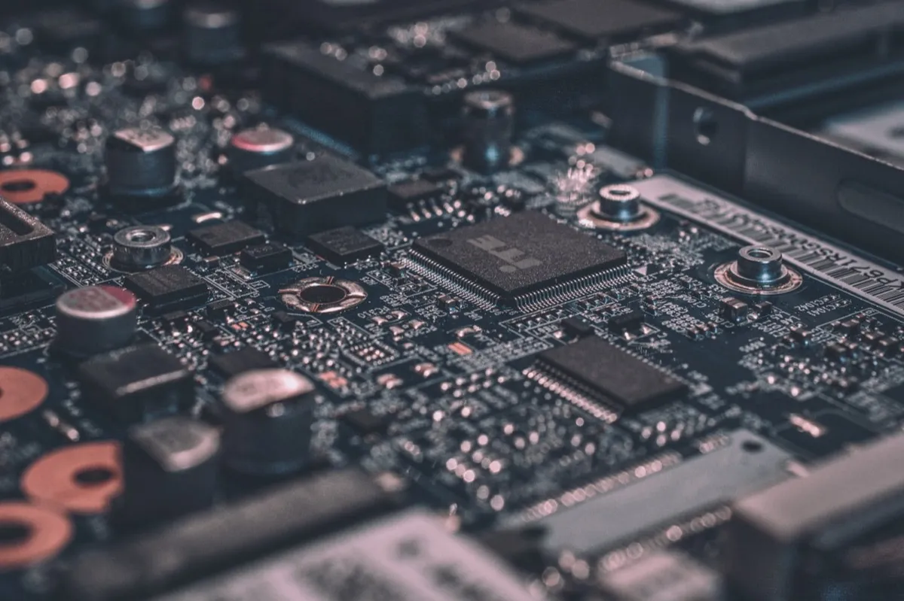

See serial output wirelessly, in real time. Just open the app — your device appears automatically.
You can't keep a USB cable plugged into something that moves. Wireless is the only option.
Sensors inside cases, weather stations outdoors, devices in hard-to-reach spots — no USB port access.
Field testing, quick checks, demos — sometimes all you have is your phone.
Install WirelessSerial via Arduino Library Manager, or pip install for Raspberry Pi.
Your device joins the same WiFi network. mDNS handles discovery automatically.
Open Serial Air — your device appears. Tap to connect and see logs in real time.
// Just 2 lines to add wireless serial #include <WirelessSerial.h> WirelessSerial ws; void setup() { Serial.begin(115200); WiFi.begin("ssid", "password"); ws.begin(); // start wireless serial ws.mirror(Serial); // mirror Serial to WiFi } void loop() { ws.handle(); Serial.println("Hello from ESP!"); delay(1000); }
# Raspberry Pi — plain TCP socket import socket, time server = socket.socket(socket.AF_INET, socket.SOCK_STREAM) server.setsockopt(socket.SOL_SOCKET, socket.SO_REUSEADDR, 1) server.bind(("", 23)) server.listen(1) print("Waiting for Serial Air...") conn, addr = server.accept() while True: conn.sendall(f"Temp: {read_sensor()}\n".encode()) time.sleep(1)
# MicroPython — ESP32 / Pico W / etc. import socket, network, time wlan = network.WLAN(network.STA_IF) wlan.active(True) wlan.connect("ssid", "password") server = socket.socket() server.bind(("", 23)) server.listen(1) conn, addr = server.accept() while True: conn.send("Hello from MicroPython!\n") time.sleep(1)
Devices are found automatically via Bonjour/mDNS. No IP address needed.
Live serial output with millisecond timestamps. Under 50ms latency.
Find specific log entries instantly. Filter by keyword in real time.
Bidirectional communication. Send text commands to your device.
Save logs as text files. Share via AirDrop, email, or any app.
Seamless recovery from network interruptions. Never miss a log line.
NodeMCU, Wemos D1 Mini
LibraryDevKit, TTGO, M5Stack
Library + BLEPi 3/4/5, Zero W/2W
TCPPico W, ESP32, WiFi boards
TCPTCP socket = works
TCP| Serial Air | BLE Terminal Apps | PC Serial Monitor | |
|---|---|---|---|
| WiFi TCP | ✓ | ✗ | ✗ |
| BLE | ✓ | ✓ | ✗ |
| ESP8266 support | ✓ | ✗ | ✓ |
| Raspberry Pi | ✓ | ✗ | ✓ |
| Auto discovery (mDNS) | ✓ | ✗ | ✗ |
| No PC required | ✓ | ✓ | ✗ |
| Arduino library included | ✓ | ✗ | — |
| Log export | ✓ | ✗ | ✓ |
シリアル出力をワイヤレスでリアルタイム確認。アプリを開くだけで、デバイスが自動で見つかります。
動き回るデバイスにUSBケーブルは繋げられません。ワイヤレスが唯一の手段です。
防水ケースの中、屋外のセンサー、手が届きにくい場所 — USBポートにアクセスできません。
現場テスト、ちょっとした確認、デモ — スマホだけで完結したい場面は多いはず。
Arduino Library ManagerからWirelessSerialをインストール。ラズパイならpipで。
デバイスが同じWiFiに参加。mDNSで自動的に検出されます。
Serial Airを開くとデバイスが表示。タップして接続、ログをリアルタイム表示。
// たった2行追加するだけ #include <WirelessSerial.h> WirelessSerial ws; void setup() { Serial.begin(115200); WiFi.begin("ssid", "password"); ws.begin(); // ワイヤレスシリアル開始 ws.mirror(Serial); // SerialをWiFiにミラー } void loop() { ws.handle(); Serial.println("Hello from ESP!"); delay(1000); }
# Raspberry Pi — シンプルなTCPソケット import socket, time server = socket.socket(socket.AF_INET, socket.SOCK_STREAM) server.setsockopt(socket.SOL_SOCKET, socket.SO_REUSEADDR, 1) server.bind(("", 23)) server.listen(1) print("Serial Airの接続を待機中...") conn, addr = server.accept() while True: conn.sendall(f"Temp: {read_sensor()}\n".encode()) time.sleep(1)
# MicroPython — ESP32 / Pico W 等 import socket, network, time wlan = network.WLAN(network.STA_IF) wlan.active(True) wlan.connect("ssid", "password") server = socket.socket() server.bind(("", 23)) server.listen(1) conn, addr = server.accept() while True: conn.send("Hello from MicroPython!\n") time.sleep(1)
Bonjour/mDNSでデバイスを自動発見。IPアドレス入力不要。
ミリ秒タイムスタンプ付きのシリアル出力。遅延50ms以下。
キーワードでログを瞬時に絞り込み。目的の情報をすぐに発見。
双方向通信。デバイスにテキストコマンドを送信可能。
テキストファイルで保存。AirDrop、メール等で共有。
ネットワーク切断から自動復帰。ログを見逃しません。
NodeMCU, Wemos D1 Mini
ライブラリDevKit, TTGO, M5Stack
ライブラリ + BLEPi 3/4/5, Zero W/2W
TCPPico W, ESP32, WiFi対応ボード
TCPTCPソケットが使えれば接続可能
TCP| Serial Air | BLEターミナル系 | PCシリアルモニター | |
|---|---|---|---|
| WiFi TCP | ✓ | ✗ | ✗ |
| BLE | ✓ | ✓ | ✗ |
| ESP8266対応 | ✓ | ✗ | ✓ |
| Raspberry Pi | ✓ | ✗ | ✓ |
| 自動検出 (mDNS) | ✓ | ✗ | ✗ |
| PC不要 | ✓ | ✓ | ✗ |
| Arduinoライブラリ同梱 | ✓ | ✗ | — |
| ログ書き出し | ✓ | ✗ | ✓ |
无线实时查看串口输出。打开应用，设备自动出现。
移动中的设备无法一直连着 USB 线，无线才是唯一的选择。
装在外壳里的传感器、户外的气象站、难以触及的设备——根本接不上 USB。
现场测试、快速检查、演示——有时你手边只有一部手机。
通过 Arduino 库管理器安装 WirelessSerial，树莓派使用 pip install。
让设备连接到同一个 WiFi 网络，mDNS 会自动完成发现。
打开 Serial Air，设备自动出现。点击连接，实时查看日志。
// 只需添加两行代码 #include <WirelessSerial.h> WirelessSerial ws; void setup() { Serial.begin(115200); WiFi.begin("ssid", "password"); ws.begin(); ws.mirror(Serial); } void loop() { ws.handle(); Serial.println("Hello from ESP!"); delay(1000); }
# 树莓派 — 简单的 TCP 套接字 import socket, time server = socket.socket(socket.AF_INET, socket.SOCK_STREAM) server.bind(("", 23)) server.listen(1) conn, addr = server.accept() while True: conn.sendall(f"Temp: {read_sensor()}\n".encode()) time.sleep(1)
# MicroPython — ESP32 / Pico W 等 import socket, network, time wlan = network.WLAN(network.STA_IF) wlan.active(True) wlan.connect("ssid", "password") server = socket.socket() server.bind(("", 23)) server.listen(1) conn, addr = server.accept() while True: conn.send("Hello from MicroPython!\n") time.sleep(1)
通过 Bonjour/mDNS 自动发现设备，无需输入 IP 地址。
毫秒级时间戳的实时串口输出，延迟低于 50ms。
即时查找特定日志条目，按关键词实时过滤。
双向通信，向设备发送文本命令。
将日志保存为文本文件，通过 AirDrop、邮件或任意应用分享。
网络中断后无缝恢复，不遗漏任何一行日志。
NodeMCU, Wemos D1 Mini
库DevKit, TTGO, M5Stack
库 + BLEPi 3/4/5, Zero W/2W
TCPPico W, ESP32, WiFi 开发板
TCP只要能建立 TCP 连接
TCP| Serial Air | BLE 终端应用 | 电脑串口监视器 | |
|---|---|---|---|
| WiFi TCP | ✓ | ✗ | ✗ |
| BLE | ✓ | ✓ | ✗ |
| ESP8266 | ✓ | ✗ | ✓ |
| 树莓派 | ✓ | ✗ | ✓ |
| 自动发现 (mDNS) | ✓ | ✗ | ✗ |
| 无需电脑 | ✓ | ✓ | ✗ |
| 内置 Arduino 库 | ✓ | ✗ | — |
| 日志导出 | ✓ | ✗ | ✓ |
시리얼 출력을 무선으로 실시간 확인. 앱을 열면 기기가 자동으로 나타납니다.
움직이는 기기에 USB 케이블을 계속 연결해 둘 수 없습니다. 무선이 유일한 방법입니다.
케이스 안의 센서, 야외 기상 관측소, 접근하기 어려운 곳의 기기 — USB 포트에 접근할 수 없습니다.
현장 테스트, 빠른 점검, 데모 — 가끔은 스마트폰뿐일 때가 있습니다.
Arduino 라이브러리 매니저에서 WirelessSerial을 설치. 라즈베리파이는 pip install.
기기를 같은 WiFi 네트워크에 연결하면 mDNS가 자동으로 검색합니다.
Serial Air를 열면 기기가 나타납니다. 탭하여 연결하고 실시간으로 로그를 확인하세요.
// 단 2줄만 추가하면 됩니다 #include <WirelessSerial.h> WirelessSerial ws; void setup() { Serial.begin(115200); WiFi.begin("ssid", "password"); ws.begin(); ws.mirror(Serial); } void loop() { ws.handle(); Serial.println("Hello from ESP!"); delay(1000); }
# 라즈베리파이 — 간단한 TCP 소켓 import socket, time server = socket.socket(socket.AF_INET, socket.SOCK_STREAM) server.bind(("", 23)) server.listen(1) conn, addr = server.accept() while True: conn.sendall(f"Temp: {read_sensor()}\n".encode()) time.sleep(1)
# MicroPython — ESP32 / Pico W 등 import socket, network, time wlan = network.WLAN(network.STA_IF) wlan.active(True) wlan.connect("ssid", "password") server = socket.socket() server.bind(("", 23)) server.listen(1) conn, addr = server.accept() while True: conn.send("Hello from MicroPython!\n") time.sleep(1)
Bonjour/mDNS를 통해 기기를 자동 검색. IP 주소 입력 불필요.
밀리초 단위 타임스탬프. 50ms 미만의 지연 시간.
특정 로그 항목을 즉시 검색하고 키워드로 실시간 필터링.
양방향 통신. 기기에 텍스트 명령어를 전송.
로그를 텍스트 파일로 저장하고 AirDrop, 이메일 등으로 공유.
네트워크 중단 시 자동 복구. 로그를 한 줄도 놓치지 않습니다.
NodeMCU, Wemos D1 Mini
라이브러리DevKit, TTGO, M5Stack
라이브러리 + BLEPi 3/4/5, Zero W/2W
TCPPico W, ESP32, WiFi 보드
TCPTCP 소켓을 열 수 있다면 사용 가능
TCP| Serial Air | BLE 터미널 앱 | PC 시리얼 모니터 | |
|---|---|---|---|
| WiFi TCP | ✓ | ✗ | ✗ |
| BLE | ✓ | ✓ | ✗ |
| ESP8266 | ✓ | ✗ | ✓ |
| 라즈베리파이 | ✓ | ✗ | ✓ |
| 자동 검색 (mDNS) | ✓ | ✗ | ✗ |
| PC 불필요 | ✓ | ✓ | ✗ |
| Arduino 라이브러리 포함 | ✓ | ✗ | — |
| 로그 내보내기 | ✓ | ✗ | ✓ |
Ve la salida serial de forma inalambrica, en tiempo real. Solo abre la app — tu dispositivo aparece automaticamente.
No puedes mantener un cable USB conectado a algo que se mueve. Lo inalambrico es la unica opcion.
Sensores dentro de carcasas, estaciones meteorologicas al aire libre, dispositivos en lugares dificiles de alcanzar.
Pruebas de campo, revisiones rapidas, demos — a veces solo tienes tu telefono.
Instala WirelessSerial desde el gestor de librerias de Arduino, o pip install para Raspberry Pi.
Tu dispositivo se une a la misma red WiFi. mDNS se encarga del descubrimiento.
Abre Serial Air — tu dispositivo aparece. Toca para conectar y ver logs en tiempo real.
// Solo 2 lineas para agregar serial inalambrico #include <WirelessSerial.h> WirelessSerial ws; void setup() { Serial.begin(115200); WiFi.begin("ssid", "password"); ws.begin(); ws.mirror(Serial); } void loop() { ws.handle(); Serial.println("Hello from ESP!"); delay(1000); }
# Raspberry Pi — socket TCP simple import socket, time server = socket.socket(socket.AF_INET, socket.SOCK_STREAM) server.bind(("", 23)) server.listen(1) conn, addr = server.accept() while True: conn.sendall(f"Temp: {read_sensor()}\n".encode()) time.sleep(1)
# MicroPython — ESP32 / Pico W / etc. import socket, network, time wlan = network.WLAN(network.STA_IF) wlan.active(True) wlan.connect("ssid", "password") server = socket.socket() server.bind(("", 23)) server.listen(1) conn, addr = server.accept() while True: conn.send("Hello from MicroPython!\n") time.sleep(1)
Los dispositivos se encuentran automaticamente via Bonjour/mDNS.
Salida serial en vivo con marcas de tiempo en milisegundos. Menos de 50ms.
Encuentra entradas de log especificas al instante. Filtra por palabra clave.
Comunicacion bidireccional. Envia comandos de texto a tu dispositivo.
Guarda los logs como archivos de texto. Comparte via AirDrop, email o cualquier app.
Recuperacion automatica ante interrupciones de red.
NodeMCU, Wemos D1 Mini
LibreriaDevKit, TTGO, M5Stack
Libreria + BLEPi 3/4/5, Zero W/2W
TCPPico W, ESP32, placas WiFi
TCPSi puede abrir un socket TCP, funciona
TCP| Serial Air | Apps BLE Terminal | Monitor serial en PC | |
|---|---|---|---|
| WiFi TCP | ✓ | ✗ | ✗ |
| BLE | ✓ | ✓ | ✗ |
| ESP8266 | ✓ | ✗ | ✓ |
| Raspberry Pi | ✓ | ✗ | ✓ |
| Auto descubrimiento (mDNS) | ✓ | ✗ | ✗ |
| Sin PC necesario | ✓ | ✓ | ✗ |
| Libreria Arduino incluida | ✓ | ✗ | — |
| Exportacion de logs | ✓ | ✗ | ✓ |
無線即時查看串口輸出。開啟應用，裝置自動出現。
移動中的裝置無法一直接著 USB 線。無線是唯一的選擇。
裝在外殼裡的感測器、戶外氣象站、難以觸及的裝置——沒有 USB 連接埠可用。
現場測試、快速檢查、展示——有時你手邊只有一部手機。
透過 Arduino 函式庫管理員安裝 WirelessSerial，樹莓派使用 pip install。
裝置連接到同一個 WiFi 網路，mDNS 自動完成發現。
開啟 Serial Air，裝置自動出現。點擊連接，即時查看日誌。
// Just 2 lines to add wireless serial #include <WirelessSerial.h> WirelessSerial ws; void setup() { Serial.begin(115200); WiFi.begin("ssid", "password"); ws.begin(); // start wireless serial ws.mirror(Serial); // mirror Serial to WiFi } void loop() { ws.handle(); Serial.println("Hello from ESP!"); delay(1000); }
# Raspberry Pi — plain TCP socket import socket, time server = socket.socket(socket.AF_INET, socket.SOCK_STREAM) server.setsockopt(socket.SOL_SOCKET, socket.SO_REUSEADDR, 1) server.bind(("", 23)) server.listen(1) print("Waiting for Serial Air...") conn, addr = server.accept() while True: conn.sendall(f"Temp: {read_sensor()}\n".encode()) time.sleep(1)
# MicroPython — ESP32 / Pico W / etc. import socket, network, time wlan = network.WLAN(network.STA_IF) wlan.active(True) wlan.connect("ssid", "password") server = socket.socket() server.bind(("", 23)) server.listen(1) conn, addr = server.accept() while True: conn.send("Hello from MicroPython!\n") time.sleep(1)
透過 Bonjour/mDNS 自動發現裝置。無需輸入 IP 位址。
毫秒級時間戳的即時串口輸出。延遲低於 50ms。
即時尋找特定日誌條目。按關鍵字即時篩選。
雙向通訊，向裝置傳送文字指令。
將日誌儲存為文字檔，透過 AirDrop、郵件或任何應用分享。
網路中斷後無縫恢復。不漏掉任何一行日誌。
NodeMCU, Wemos D1 Mini
LibraryDevKit, TTGO, M5Stack
Library + BLEPi 3/4/5, Zero W/2W
TCPPico W, ESP32, WiFi boards
TCPTCP socket = works
TCP| Serial Air | BLE 終端應用 | 電腦串口監視器 | |
|---|---|---|---|
| WiFi TCP | ✓ | ✗ | ✗ |
| BLE | ✓ | ✓ | ✗ |
| ESP8266 | ✓ | ✗ | ✓ |
| Raspberry Pi | ✓ | ✗ | ✓ |
| 自動發現 (mDNS) | ✓ | ✗ | ✗ |
| 無需電腦 | ✓ | ✓ | ✗ |
| 內建 Arduino 函式庫 | ✓ | ✗ | — |
| 日誌匯出 | ✓ | ✗ | ✓ |
ดู serial output แบบไร้สาย เรียลไทม์ เปิดแอป — อุปกรณ์ปรากฏอัตโนมัติ
ไม่สามารถเสียบสาย USB กับสิ่งที่เคลื่อนที่ได้ ไร้สายเป็นทางเลือกเดียว
เซ็นเซอร์ในกล่อง สถานีตรวจอากาศกลางแจ้ง อุปกรณ์ในจุดที่เข้าถึงยาก — ไม่มีพอร์ต USB ให้ใช้
ทดสอบภาคสนาม ตรวจสอบด่วน สาธิต — บางทีคุณมีแค่มือถือ
ติดตั้ง WirelessSerial ผ่าน Arduino Library Manager หรือ pip install สำหรับ Raspberry Pi
อุปกรณ์ของคุณเชื่อมต่อ WiFi เดียวกัน mDNS จัดการค้นหาอัตโนมัติ
เปิด Serial Air — อุปกรณ์ปรากฏขึ้น แตะเพื่อเชื่อมต่อและดู log แบบเรียลไทม์
// Just 2 lines to add wireless serial #include <WirelessSerial.h> WirelessSerial ws; void setup() { Serial.begin(115200); WiFi.begin("ssid", "password"); ws.begin(); // start wireless serial ws.mirror(Serial); // mirror Serial to WiFi } void loop() { ws.handle(); Serial.println("Hello from ESP!"); delay(1000); }
# Raspberry Pi — plain TCP socket import socket, time server = socket.socket(socket.AF_INET, socket.SOCK_STREAM) server.setsockopt(socket.SOL_SOCKET, socket.SO_REUSEADDR, 1) server.bind(("", 23)) server.listen(1) print("Waiting for Serial Air...") conn, addr = server.accept() while True: conn.sendall(f"Temp: {read_sensor()}\n".encode()) time.sleep(1)
# MicroPython — ESP32 / Pico W / etc. import socket, network, time wlan = network.WLAN(network.STA_IF) wlan.active(True) wlan.connect("ssid", "password") server = socket.socket() server.bind(("", 23)) server.listen(1) conn, addr = server.accept() while True: conn.send("Hello from MicroPython!\n") time.sleep(1)
อุปกรณ์ถูกค้นพบอัตโนมัติผ่าน Bonjour/mDNS ไม่ต้องใส่ IP
serial output แบบสดพร้อม timestamp ระดับมิลลิวินาที ดีเลย์ต่ำกว่า 50ms
ค้นหา log ที่ต้องการได้ทันที กรองตามคีย์เวิร์ดแบบเรียลไทม์
สื่อสารสองทาง ส่งคำสั่งข้อความไปยังอุปกรณ์ของคุณ
บันทึก log เป็นไฟล์ข้อความ แชร์ผ่าน AirDrop อีเมล หรือแอปอื่น
กลับมาเชื่อมต่อได้อย่างราบรื่นหลังเครือข่ายขาด ไม่พลาด log แม้แต่บรรทัดเดียว
NodeMCU, Wemos D1 Mini
LibraryDevKit, TTGO, M5Stack
Library + BLEPi 3/4/5, Zero W/2W
TCPPico W, ESP32, WiFi boards
TCPTCP socket = works
TCP| Serial Air | แอป BLE Terminal | PC Serial Monitor | |
|---|---|---|---|
| WiFi TCP | ✓ | ✗ | ✗ |
| BLE | ✓ | ✓ | ✗ |
| ESP8266 | ✓ | ✗ | ✓ |
| Raspberry Pi | ✓ | ✗ | ✓ |
| ค้นหาอัตโนมัติ (mDNS) | ✓ | ✗ | ✗ |
| ไม่ต้องใช้ PC | ✓ | ✓ | ✗ |
| รวม Arduino library | ✓ | ✗ | — |
| ส่งออก log | ✓ | ✗ | ✓ |
Xem đầu ra serial không dây, theo thời gian thực. Mở ứng dụng — thiết bị tự động xuất hiện.
Không thể cắm cáp USB vào thứ đang di chuyển. Không dây là lựa chọn duy nhất.
Cảm biến trong hộp, trạm thời tiết ngoài trời, thiết bị ở nơi khó tiếp cận — không có cổng USB.
Thử nghiệm thực địa, kiểm tra nhanh, demo — đôi khi bạn chỉ có điện thoại.
Cài WirelessSerial qua Arduino Library Manager, hoặc pip install cho Raspberry Pi.
Thiết bị kết nối cùng mạng WiFi. mDNS tự động phát hiện thiết bị.
Mở Serial Air — thiết bị xuất hiện. Chạm để kết nối và xem log theo thời gian thực.
// Just 2 lines to add wireless serial #include <WirelessSerial.h> WirelessSerial ws; void setup() { Serial.begin(115200); WiFi.begin("ssid", "password"); ws.begin(); // start wireless serial ws.mirror(Serial); // mirror Serial to WiFi } void loop() { ws.handle(); Serial.println("Hello from ESP!"); delay(1000); }
# Raspberry Pi — plain TCP socket import socket, time server = socket.socket(socket.AF_INET, socket.SOCK_STREAM) server.setsockopt(socket.SOL_SOCKET, socket.SO_REUSEADDR, 1) server.bind(("", 23)) server.listen(1) print("Waiting for Serial Air...") conn, addr = server.accept() while True: conn.sendall(f"Temp: {read_sensor()}\n".encode()) time.sleep(1)
# MicroPython — ESP32 / Pico W / etc. import socket, network, time wlan = network.WLAN(network.STA_IF) wlan.active(True) wlan.connect("ssid", "password") server = socket.socket() server.bind(("", 23)) server.listen(1) conn, addr = server.accept() while True: conn.send("Hello from MicroPython!\n") time.sleep(1)
Thiết bị được tìm thấy tự động qua Bonjour/mDNS. Không cần địa chỉ IP.
Đầu ra serial trực tiếp với timestamp mili-giây. Độ trễ dưới 50ms.
Tìm mục log cụ thể ngay lập tức. Lọc theo từ khóa theo thời gian thực.
Giao tiếp hai chiều. Gửi lệnh văn bản đến thiết bị của bạn.
Lưu log dưới dạng file văn bản. Chia sẻ qua AirDrop, email hoặc ứng dụng bất kỳ.
Phục hồi liền mạch sau khi mạng bị gián đoạn. Không bỏ lỡ dòng log nào.
NodeMCU, Wemos D1 Mini
LibraryDevKit, TTGO, M5Stack
Library + BLEPi 3/4/5, Zero W/2W
TCPPico W, ESP32, WiFi boards
TCPTCP socket = works
TCP| Serial Air | App BLE Terminal | PC Serial Monitor | |
|---|---|---|---|
| WiFi TCP | ✓ | ✗ | ✗ |
| BLE | ✓ | ✓ | ✗ |
| ESP8266 | ✓ | ✗ | ✓ |
| Raspberry Pi | ✓ | ✗ | ✓ |
| Phát hiện tự động (mDNS) | ✓ | ✗ | ✗ |
| Không cần PC | ✓ | ✓ | ✗ |
| Bao gồm Arduino library | ✓ | ✗ | — |
| Xuất log | ✓ | ✗ | ✓ |
Lihat output serial secara nirkabel, real-time. Buka aplikasi — perangkat Anda muncul otomatis.
Tidak bisa mencolokkan kabel USB ke sesuatu yang bergerak. Nirkabel adalah satu-satunya pilihan.
Sensor di dalam kotak, stasiun cuaca di luar ruangan, perangkat di tempat sulit dijangkau — tidak ada akses port USB.
Uji lapangan, pengecekan cepat, demo — terkadang yang Anda punya hanya ponsel.
Install WirelessSerial via Arduino Library Manager, atau pip install untuk Raspberry Pi.
Perangkat Anda bergabung ke jaringan WiFi yang sama. mDNS menangani penemuan secara otomatis.
Buka Serial Air — perangkat Anda muncul. Ketuk untuk terhubung dan lihat log secara real-time.
// Just 2 lines to add wireless serial #include <WirelessSerial.h> WirelessSerial ws; void setup() { Serial.begin(115200); WiFi.begin("ssid", "password"); ws.begin(); // start wireless serial ws.mirror(Serial); // mirror Serial to WiFi } void loop() { ws.handle(); Serial.println("Hello from ESP!"); delay(1000); }
# Raspberry Pi — plain TCP socket import socket, time server = socket.socket(socket.AF_INET, socket.SOCK_STREAM) server.setsockopt(socket.SOL_SOCKET, socket.SO_REUSEADDR, 1) server.bind(("", 23)) server.listen(1) print("Waiting for Serial Air...") conn, addr = server.accept() while True: conn.sendall(f"Temp: {read_sensor()}\n".encode()) time.sleep(1)
# MicroPython — ESP32 / Pico W / etc. import socket, network, time wlan = network.WLAN(network.STA_IF) wlan.active(True) wlan.connect("ssid", "password") server = socket.socket() server.bind(("", 23)) server.listen(1) conn, addr = server.accept() while True: conn.send("Hello from MicroPython!\n") time.sleep(1)
Perangkat ditemukan secara otomatis melalui Bonjour/mDNS. Tidak perlu alamat IP.
Output serial langsung dengan timestamp milidetik. Latensi di bawah 50ms.
Temukan entri log spesifik secara instan. Filter berdasarkan kata kunci secara real-time.
Komunikasi dua arah. Kirim perintah teks ke perangkat Anda.
Simpan log sebagai file teks. Bagikan via AirDrop, email, atau aplikasi apa saja.
Pemulihan mulus setelah gangguan jaringan. Tidak ada log yang terlewat.
NodeMCU, Wemos D1 Mini
LibraryDevKit, TTGO, M5Stack
Library + BLEPi 3/4/5, Zero W/2W
TCPPico W, ESP32, WiFi boards
TCPTCP socket = works
TCP| Serial Air | App BLE Terminal | PC Serial Monitor | |
|---|---|---|---|
| WiFi TCP | ✓ | ✗ | ✗ |
| BLE | ✓ | ✓ | ✗ |
| ESP8266 | ✓ | ✗ | ✓ |
| Raspberry Pi | ✓ | ✗ | ✓ |
| Penemuan otomatis (mDNS) | ✓ | ✗ | ✗ |
| Tanpa PC | ✓ | ✓ | ✗ |
| Termasuk Arduino library | ✓ | ✗ | — |
| Ekspor log | ✓ | ✗ | ✓ |
सीरियल आउटपुट वायरलेस तरीक़े से, रियल-टाइम में देखें। बस ऐप खोलें — आपका डिवाइस अपने आप दिखाई देगा।
चलती हुई चीज़ में USB केबल लगाए नहीं रख सकते। वायरलेस ही एकमात्र विकल्प है।
बॉक्स में सेंसर, बाहरी वेदर स्टेशन, मुश्किल जगहों पर डिवाइस — USB पोर्ट उपलब्ध नहीं।
फ़ील्ड टेस्टिंग, क्विक चेक, डेमो — कभी-कभी आपके पास सिर्फ़ फ़ोन होता है।
Arduino Library Manager से WirelessSerial इंस्टॉल करें, या Raspberry Pi के लिए pip install करें।
आपका डिवाइस उसी WiFi नेटवर्क से जुड़ता है। mDNS अपने आप डिस्कवरी करता है।
Serial Air खोलें — आपका डिवाइस दिखेगा। कनेक्ट करने के लिए टैप करें और रियल-टाइम में लॉग देखें।
// Just 2 lines to add wireless serial #include <WirelessSerial.h> WirelessSerial ws; void setup() { Serial.begin(115200); WiFi.begin("ssid", "password"); ws.begin(); // start wireless serial ws.mirror(Serial); // mirror Serial to WiFi } void loop() { ws.handle(); Serial.println("Hello from ESP!"); delay(1000); }
# Raspberry Pi — plain TCP socket import socket, time server = socket.socket(socket.AF_INET, socket.SOCK_STREAM) server.setsockopt(socket.SOL_SOCKET, socket.SO_REUSEADDR, 1) server.bind(("", 23)) server.listen(1) print("Waiting for Serial Air...") conn, addr = server.accept() while True: conn.sendall(f"Temp: {read_sensor()}\n".encode()) time.sleep(1)
# MicroPython — ESP32 / Pico W / etc. import socket, network, time wlan = network.WLAN(network.STA_IF) wlan.active(True) wlan.connect("ssid", "password") server = socket.socket() server.bind(("", 23)) server.listen(1) conn, addr = server.accept() while True: conn.send("Hello from MicroPython!\n") time.sleep(1)
Bonjour/mDNS के ज़रिए डिवाइस अपने आप मिल जाते हैं। IP एड्रेस की ज़रूरत नहीं।
मिलीसेकंड टाइमस्टैंप के साथ लाइव सीरियल आउटपुट। 50ms से कम लेटेंसी।
विशिष्ट लॉग एंट्री तुरंत खोजें। कीवर्ड से रियल-टाइम में फ़िल्टर करें।
दो-तरफ़ा संवाद। अपने डिवाइस को टेक्स्ट कमांड भेजें।
लॉग को टेक्स्ट फ़ाइल में सेव करें। AirDrop, ईमेल या किसी भी ऐप से शेयर करें।
नेटवर्क रुकावट के बाद सहज रिकवरी। कोई लॉग लाइन मिस नहीं होगी।
NodeMCU, Wemos D1 Mini
LibraryDevKit, TTGO, M5Stack
Library + BLEPi 3/4/5, Zero W/2W
TCPPico W, ESP32, WiFi boards
TCPTCP socket = works
TCP| Serial Air | BLE Terminal ऐप्स | PC Serial Monitor | |
|---|---|---|---|
| WiFi TCP | ✓ | ✗ | ✗ |
| BLE | ✓ | ✓ | ✗ |
| ESP8266 | ✓ | ✗ | ✓ |
| Raspberry Pi | ✓ | ✗ | ✓ |
| ऑटो डिस्कवरी (mDNS) | ✓ | ✗ | ✗ |
| PC की ज़रूरत नहीं | ✓ | ✓ | ✗ |
| Arduino library शामिल | ✓ | ✗ | — |
| लॉग एक्सपोर्ट | ✓ | ✗ | ✓ |
Serielle Ausgabe drahtlos in Echtzeit sehen. App öffnen — Ihr Gerät erscheint automatisch.
An etwas, das sich bewegt, kann kein USB-Kabel angeschlossen bleiben. Drahtlos ist die einzige Option.
Sensoren in Gehäusen, Wetterstationen im Freien, Geräte an schwer zugänglichen Stellen — kein USB-Zugang.
Feldtests, schnelle Checks, Demos — manchmal haben Sie nur Ihr Handy.
WirelessSerial über den Arduino Library Manager installieren, oder pip install für Raspberry Pi.
Ihr Gerät tritt dem gleichen WiFi-Netzwerk bei. mDNS übernimmt die Erkennung automatisch.
Serial Air öffnen — Ihr Gerät erscheint. Antippen zum Verbinden und Logs in Echtzeit sehen.
// Just 2 lines to add wireless serial #include <WirelessSerial.h> WirelessSerial ws; void setup() { Serial.begin(115200); WiFi.begin("ssid", "password"); ws.begin(); // start wireless serial ws.mirror(Serial); // mirror Serial to WiFi } void loop() { ws.handle(); Serial.println("Hello from ESP!"); delay(1000); }
# Raspberry Pi — plain TCP socket import socket, time server = socket.socket(socket.AF_INET, socket.SOCK_STREAM) server.setsockopt(socket.SOL_SOCKET, socket.SO_REUSEADDR, 1) server.bind(("", 23)) server.listen(1) print("Waiting for Serial Air...") conn, addr = server.accept() while True: conn.sendall(f"Temp: {read_sensor()}\n".encode()) time.sleep(1)
# MicroPython — ESP32 / Pico W / etc. import socket, network, time wlan = network.WLAN(network.STA_IF) wlan.active(True) wlan.connect("ssid", "password") server = socket.socket() server.bind(("", 23)) server.listen(1) conn, addr = server.accept() while True: conn.send("Hello from MicroPython!\n") time.sleep(1)
Geräte werden automatisch per Bonjour/mDNS gefunden. Keine IP-Adresse nötig.
Live serielle Ausgabe mit Millisekunden-Zeitstempeln. Unter 50 ms Latenz.
Bestimmte Log-Einträge sofort finden. In Echtzeit nach Stichwort filtern.
Bidirektionale Kommunikation. Textbefehle an Ihr Gerät senden.
Logs als Textdateien speichern. Teilen per AirDrop, E-Mail oder jeder App.
Nahtlose Wiederherstellung nach Netzwerkunterbrechungen. Keine Log-Zeile geht verloren.
NodeMCU, Wemos D1 Mini
LibraryDevKit, TTGO, M5Stack
Library + BLEPi 3/4/5, Zero W/2W
TCPPico W, ESP32, WiFi boards
TCPTCP socket = works
TCP| Serial Air | BLE-Terminal-Apps | PC Serial Monitor | |
|---|---|---|---|
| WiFi TCP | ✓ | ✗ | ✗ |
| BLE | ✓ | ✓ | ✗ |
| ESP8266 | ✓ | ✗ | ✓ |
| Raspberry Pi | ✓ | ✗ | ✓ |
| Auto-Erkennung (mDNS) | ✓ | ✗ | ✗ |
| Kein PC erforderlich | ✓ | ✓ | ✗ |
| Arduino-Bibliothek enthalten | ✓ | ✗ | — |
| Log-Export | ✓ | ✗ | ✓ |
Visualisez la sortie série sans fil, en temps réel. Ouvrez l'app — votre appareil apparaît automatiquement.
Impossible de garder un câble USB branché sur un objet en mouvement. Le sans-fil est la seule option.
Capteurs dans des boîtiers, stations météo en extérieur, appareils difficiles d'accès — pas de port USB disponible.
Tests terrain, vérifications rapides, démos — parfois vous n'avez que votre téléphone.
Installez WirelessSerial via le gestionnaire de bibliothèques Arduino, ou pip install pour Raspberry Pi.
Votre appareil rejoint le même réseau WiFi. mDNS gère la découverte automatiquement.
Ouvrez Serial Air — votre appareil apparaît. Appuyez pour vous connecter et voir les logs en temps réel.
// Just 2 lines to add wireless serial #include <WirelessSerial.h> WirelessSerial ws; void setup() { Serial.begin(115200); WiFi.begin("ssid", "password"); ws.begin(); // start wireless serial ws.mirror(Serial); // mirror Serial to WiFi } void loop() { ws.handle(); Serial.println("Hello from ESP!"); delay(1000); }
# Raspberry Pi — plain TCP socket import socket, time server = socket.socket(socket.AF_INET, socket.SOCK_STREAM) server.setsockopt(socket.SOL_SOCKET, socket.SO_REUSEADDR, 1) server.bind(("", 23)) server.listen(1) print("Waiting for Serial Air...") conn, addr = server.accept() while True: conn.sendall(f"Temp: {read_sensor()}\n".encode()) time.sleep(1)
# MicroPython — ESP32 / Pico W / etc. import socket, network, time wlan = network.WLAN(network.STA_IF) wlan.active(True) wlan.connect("ssid", "password") server = socket.socket() server.bind(("", 23)) server.listen(1) conn, addr = server.accept() while True: conn.send("Hello from MicroPython!\n") time.sleep(1)
Les appareils sont trouvés automatiquement via Bonjour/mDNS. Pas besoin d'adresse IP.
Sortie série en direct avec horodatage à la milliseconde. Latence inférieure à 50 ms.
Trouvez des entrées de log précises instantanément. Filtrez par mot-clé en temps réel.
Communication bidirectionnelle. Envoyez des commandes texte à votre appareil.
Sauvegardez les logs en fichiers texte. Partagez via AirDrop, email ou toute autre app.
Reprise transparente après une coupure réseau. Ne perdez aucune ligne de log.
NodeMCU, Wemos D1 Mini
LibraryDevKit, TTGO, M5Stack
Library + BLEPi 3/4/5, Zero W/2W
TCPPico W, ESP32, WiFi boards
TCPTCP socket = works
TCP| Serial Air | Apps terminal BLE | Moniteur série PC | |
|---|---|---|---|
| WiFi TCP | ✓ | ✗ | ✗ |
| BLE | ✓ | ✓ | ✗ |
| ESP8266 | ✓ | ✗ | ✓ |
| Raspberry Pi | ✓ | ✗ | ✓ |
| Découverte auto (mDNS) | ✓ | ✗ | ✗ |
| Pas de PC requis | ✓ | ✓ | ✗ |
| Bibliothèque Arduino incluse | ✓ | ✗ | — |
| Export de logs | ✓ | ✗ | ✓ |
Veja a saída serial sem fio, em tempo real. Abra o app — seu dispositivo aparece automaticamente.
Não dá para manter um cabo USB conectado em algo que se move. Wireless é a única opção.
Sensores dentro de caixas, estações meteorológicas ao ar livre, dispositivos de difícil acesso — sem porta USB disponível.
Testes de campo, verificações rápidas, demos — às vezes tudo que você tem é o celular.
Instale WirelessSerial pelo Arduino Library Manager, ou pip install para Raspberry Pi.
Seu dispositivo entra na mesma rede WiFi. O mDNS cuida da descoberta automaticamente.
Abra o Serial Air — seu dispositivo aparece. Toque para conectar e ver os logs em tempo real.
// Just 2 lines to add wireless serial #include <WirelessSerial.h> WirelessSerial ws; void setup() { Serial.begin(115200); WiFi.begin("ssid", "password"); ws.begin(); // start wireless serial ws.mirror(Serial); // mirror Serial to WiFi } void loop() { ws.handle(); Serial.println("Hello from ESP!"); delay(1000); }
# Raspberry Pi — plain TCP socket import socket, time server = socket.socket(socket.AF_INET, socket.SOCK_STREAM) server.setsockopt(socket.SOL_SOCKET, socket.SO_REUSEADDR, 1) server.bind(("", 23)) server.listen(1) print("Waiting for Serial Air...") conn, addr = server.accept() while True: conn.sendall(f"Temp: {read_sensor()}\n".encode()) time.sleep(1)
# MicroPython — ESP32 / Pico W / etc. import socket, network, time wlan = network.WLAN(network.STA_IF) wlan.active(True) wlan.connect("ssid", "password") server = socket.socket() server.bind(("", 23)) server.listen(1) conn, addr = server.accept() while True: conn.send("Hello from MicroPython!\n") time.sleep(1)
Dispositivos são encontrados automaticamente via Bonjour/mDNS. Sem necessidade de endereço IP.
Saída serial ao vivo com timestamps em milissegundos. Latência abaixo de 50 ms.
Encontre entradas de log específicas instantaneamente. Filtre por palavra-chave em tempo real.
Comunicação bidirecional. Envie comandos de texto ao seu dispositivo.
Salve logs como arquivos de texto. Compartilhe via AirDrop, e-mail ou qualquer app.
Recuperação transparente após interrupções de rede. Nunca perca uma linha de log.
NodeMCU, Wemos D1 Mini
LibraryDevKit, TTGO, M5Stack
Library + BLEPi 3/4/5, Zero W/2W
TCPPico W, ESP32, WiFi boards
TCPTCP socket = works
TCP| Serial Air | Apps de terminal BLE | Monitor serial do PC | |
|---|---|---|---|
| WiFi TCP | ✓ | ✗ | ✗ |
| BLE | ✓ | ✓ | ✗ |
| ESP8266 | ✓ | ✗ | ✓ |
| Raspberry Pi | ✓ | ✗ | ✓ |
| Descoberta auto (mDNS) | ✓ | ✗ | ✗ |
| Sem PC necessário | ✓ | ✓ | ✗ |
| Biblioteca Arduino incluída | ✓ | ✗ | — |
| Export de logs | ✓ | ✗ | ✓ |
Visualizza l'output seriale senza fili, in tempo reale. Apri l'app — il tuo dispositivo appare automaticamente.
Non puoi tenere un cavo USB collegato a qualcosa che si muove. Il wireless è l'unica opzione.
Sensori dentro custodie, stazioni meteo all'aperto, dispositivi in punti difficili da raggiungere — nessun accesso USB.
Test sul campo, controlli rapidi, demo — a volte hai solo il tuo telefono.
Installa WirelessSerial tramite il Library Manager di Arduino, oppure pip install per Raspberry Pi.
Il tuo dispositivo si unisce alla stessa rete WiFi. mDNS gestisce la scoperta automaticamente.
Apri Serial Air — il tuo dispositivo appare. Tocca per connetterti e vedere i log in tempo reale.
// Just 2 lines to add wireless serial #include <WirelessSerial.h> WirelessSerial ws; void setup() { Serial.begin(115200); WiFi.begin("ssid", "password"); ws.begin(); // start wireless serial ws.mirror(Serial); // mirror Serial to WiFi } void loop() { ws.handle(); Serial.println("Hello from ESP!"); delay(1000); }
# Raspberry Pi — plain TCP socket import socket, time server = socket.socket(socket.AF_INET, socket.SOCK_STREAM) server.setsockopt(socket.SOL_SOCKET, socket.SO_REUSEADDR, 1) server.bind(("", 23)) server.listen(1) print("Waiting for Serial Air...") conn, addr = server.accept() while True: conn.sendall(f"Temp: {read_sensor()}\n".encode()) time.sleep(1)
# MicroPython — ESP32 / Pico W / etc. import socket, network, time wlan = network.WLAN(network.STA_IF) wlan.active(True) wlan.connect("ssid", "password") server = socket.socket() server.bind(("", 23)) server.listen(1) conn, addr = server.accept() while True: conn.send("Hello from MicroPython!\n") time.sleep(1)
I dispositivi vengono trovati automaticamente tramite Bonjour/mDNS. Nessun indirizzo IP necessario.
Output seriale live con timestamp al millisecondo. Latenza inferiore a 50 ms.
Trova voci di log specifiche istantaneamente. Filtra per parola chiave in tempo reale.
Comunicazione bidirezionale. Invia comandi di testo al tuo dispositivo.
Salva i log come file di testo. Condividi tramite AirDrop, email o qualsiasi app.
Ripristino trasparente dopo interruzioni di rete. Non perdere mai una riga di log.
NodeMCU, Wemos D1 Mini
LibraryDevKit, TTGO, M5Stack
Library + BLEPi 3/4/5, Zero W/2W
TCPPico W, ESP32, WiFi boards
TCPTCP socket = works
TCP| Serial Air | App terminale BLE | Monitor seriale PC | |
|---|---|---|---|
| WiFi TCP | ✓ | ✗ | ✗ |
| BLE | ✓ | ✓ | ✗ |
| ESP8266 | ✓ | ✗ | ✓ |
| Raspberry Pi | ✓ | ✗ | ✓ |
| Scoperta auto (mDNS) | ✓ | ✗ | ✗ |
| Nessun PC richiesto | ✓ | ✓ | ✗ |
| Libreria Arduino inclusa | ✓ | ✗ | — |
| Export dei log | ✓ | ✗ | ✓ |
Смотрите вывод последовательного порта без проводов, в реальном времени. Откройте приложение — устройство появится автоматически.
Нельзя держать USB-кабель подключённым к движущемуся устройству. Беспроводная связь — единственный вариант.
Датчики в корпусах, метеостанции на улице, устройства в труднодоступных местах — USB-порт недоступен.
Полевые тесты, быстрые проверки, демонстрации — иногда у вас только телефон.
Установите WirelessSerial через Arduino Library Manager или pip install для Raspberry Pi.
Ваше устройство подключается к той же WiFi-сети. mDNS обнаруживает его автоматически.
Откройте Serial Air — устройство появится. Нажмите для подключения и просмотра логов в реальном времени.
// Just 2 lines to add wireless serial #include <WirelessSerial.h> WirelessSerial ws; void setup() { Serial.begin(115200); WiFi.begin("ssid", "password"); ws.begin(); // start wireless serial ws.mirror(Serial); // mirror Serial to WiFi } void loop() { ws.handle(); Serial.println("Hello from ESP!"); delay(1000); }
# Raspberry Pi — plain TCP socket import socket, time server = socket.socket(socket.AF_INET, socket.SOCK_STREAM) server.setsockopt(socket.SOL_SOCKET, socket.SO_REUSEADDR, 1) server.bind(("", 23)) server.listen(1) print("Waiting for Serial Air...") conn, addr = server.accept() while True: conn.sendall(f"Temp: {read_sensor()}\n".encode()) time.sleep(1)
# MicroPython — ESP32 / Pico W / etc. import socket, network, time wlan = network.WLAN(network.STA_IF) wlan.active(True) wlan.connect("ssid", "password") server = socket.socket() server.bind(("", 23)) server.listen(1) conn, addr = server.accept() while True: conn.send("Hello from MicroPython!\n") time.sleep(1)
Устройства находятся автоматически через Bonjour/mDNS. IP-адрес не нужен.
Живой последовательный вывод с миллисекундными метками времени. Задержка менее 50 мс.
Мгновенный поиск нужных записей в логах. Фильтрация по ключевому слову в реальном времени.
Двусторонняя связь. Отправляйте текстовые команды на устройство.
Сохраняйте логи в текстовые файлы. Делитесь через AirDrop, email или любое приложение.
Бесшовное восстановление после сетевых сбоев. Ни одна строка лога не потеряется.
NodeMCU, Wemos D1 Mini
LibraryDevKit, TTGO, M5Stack
Library + BLEPi 3/4/5, Zero W/2W
TCPPico W, ESP32, WiFi boards
TCPTCP socket = works
TCP| Serial Air | BLE Terminal приложения | ПК Serial Monitor | |
|---|---|---|---|
| WiFi TCP | ✓ | ✗ | ✗ |
| BLE | ✓ | ✓ | ✗ |
| ESP8266 | ✓ | ✗ | ✓ |
| Raspberry Pi | ✓ | ✗ | ✓ |
| Автообнаружение (mDNS) | ✓ | ✗ | ✗ |
| Без ПК | ✓ | ✓ | ✗ |
| Arduino библиотека включена | ✓ | ✗ | — |
| Экспорт логов | ✓ | ✗ | ✓ |
شاهد مخرجات Serial لاسلكياً في الوقت الفعلي. افتح التطبيق — يظهر جهازك تلقائياً.
لا يمكنك إبقاء كابل USB متصلاً بشيء يتحرك. اللاسلكي هو الخيار الوحيد.
مستشعرات داخل صناديق، محطات طقس خارجية، أجهزة في أماكن يصعب الوصول إليها — لا منفذ USB متاح.
اختبارات ميدانية، فحوصات سريعة، عروض توضيحية — أحياناً كل ما لديك هو هاتفك.
ثبّت WirelessSerial عبر Arduino Library Manager، أو pip install لـ Raspberry Pi.
جهازك ينضم لنفس شبكة WiFi. mDNS يتولى الاكتشاف تلقائياً.
افتح Serial Air — جهازك يظهر. انقر للاتصال وشاهد السجلات في الوقت الفعلي.
// Just 2 lines to add wireless serial #include <WirelessSerial.h> WirelessSerial ws; void setup() { Serial.begin(115200); WiFi.begin("ssid", "password"); ws.begin(); // start wireless serial ws.mirror(Serial); // mirror Serial to WiFi } void loop() { ws.handle(); Serial.println("Hello from ESP!"); delay(1000); }
# Raspberry Pi — plain TCP socket import socket, time server = socket.socket(socket.AF_INET, socket.SOCK_STREAM) server.setsockopt(socket.SOL_SOCKET, socket.SO_REUSEADDR, 1) server.bind(("", 23)) server.listen(1) print("Waiting for Serial Air...") conn, addr = server.accept() while True: conn.sendall(f"Temp: {read_sensor()}\n".encode()) time.sleep(1)
# MicroPython — ESP32 / Pico W / etc. import socket, network, time wlan = network.WLAN(network.STA_IF) wlan.active(True) wlan.connect("ssid", "password") server = socket.socket() server.bind(("", 23)) server.listen(1) conn, addr = server.accept() while True: conn.send("Hello from MicroPython!\n") time.sleep(1)
يتم العثور على الأجهزة تلقائياً عبر Bonjour/mDNS. لا حاجة لعنوان IP.
مخرجات serial مباشرة مع طوابع زمنية بالمللي ثانية. زمن استجابة أقل من 50 مللي ثانية.
ابحث عن إدخالات سجل محددة فوراً. صفّي حسب الكلمة المفتاحية في الوقت الفعلي.
اتصال ثنائي الاتجاه. أرسل أوامر نصية إلى جهازك.
احفظ السجلات كملفات نصية. شارك عبر AirDrop أو البريد الإلكتروني أو أي تطبيق.
استعادة سلسة بعد انقطاع الشبكة. لن تفوتك أي سطر من السجلات.
NodeMCU, Wemos D1 Mini
LibraryDevKit, TTGO, M5Stack
Library + BLEPi 3/4/5, Zero W/2W
TCPPico W, ESP32, WiFi boards
TCPTCP socket = works
TCP| Serial Air | تطبيقات BLE Terminal | PC Serial Monitor | |
|---|---|---|---|
| WiFi TCP | ✓ | ✗ | ✗ |
| BLE | ✓ | ✓ | ✗ |
| ESP8266 | ✓ | ✗ | ✓ |
| Raspberry Pi | ✓ | ✗ | ✓ |
| اكتشاف تلقائي (mDNS) | ✓ | ✗ | ✗ |
| بدون كمبيوتر | ✓ | ✓ | ✗ |
| مكتبة Arduino مضمّنة | ✓ | ✗ | — |
| تصدير السجلات | ✓ | ✗ | ✓ |